Advanced Computer Architecture course project. Measurements: Person A; modelling, analysis and report: Person B. All numbers below are regenerated by analyze.py / compare.py from the data in data/sai-Victus-by-HP-Gaming-Laptop-15-fa1xxx/.
For most of computing history, performance tuning meant reducing run time, and energy was treated as something that would follow. That assumption no longer holds automatically. Batteries, data-centre electricity bills and thermal design limits make energy a first-class cost, and modern processors spend it in ways that are not proportional to time: they change clock and voltage on the fly, they share a power budget between cores, and they burn a sizeable amount of power simply by being switched on.
This project asks one question: on a modern multicore CPU, does making code faster also make it more energy-efficient? To answer it we use the energy roofline model of Choi et al. [1], with the extensions from their follow-up study [2]. We fit the model to measurements from an Intel Core i5-13420H laptop processor, test it on three real kernels, and use it to study how data reuse and thread count affect time, energy and operations per joule. We also repeat the measurements with turbo boost disabled. That second setting gives the most important result of the study: the model's verdict holds within each setting but cannot choose between them.
An algorithm is described by two numbers: its work W (floating-point operations) and its traffic Q (bytes moved between main memory and the processor). Their ratio, the arithmetic intensity I = W/Q (flop/byte), is the x-axis of every plot in this report. The machine is described by the time per flop τflop = 1/(peak flop/s) and the time per byte τmem = 1/(peak bandwidth), plus three energy constants: the energy per flop εflop, the energy per byte εmem, and a constant power π₀ that is drawn for as long as the program runs.
| Symbol | Meaning | Unit |
|---|---|---|
| W, Q, I | flops, DRAM bytes, intensity W/Q | flop, B, flop/B |
| τflop, τmem | time per flop / per byte (inverse peaks) | s |
| Bτ = τmem/τflop | time balance (ridge point of the roofline) | flop/B |
| εflop, εmem | energy per flop / per byte | J |
| π₀ | constant power | W |
| Bε = εmem/εflop | energy balance | flop/B |
| ε₀ = π₀·τflop | constant energy charged per flop at peak rate | J |
| ηflop = εflop/(εflop+ε₀) | share of a flop's energy that is not constant power | – |
| B̂ε(I) | effective energy balance (includes π₀) | flop/B |
| Δπ | usable power above π₀ (power cap, paper 2) | W |
Paper 1's Table I gives the unit of Bε as "flops per Joule". Since Bε is a ratio of two energies per unit (J/B divided by J/flop), its unit is flop/byte, the same as Bτ and I. We treat the table entry as a typo.
The model assumes that computation and data transfer overlap perfectly, so the slower of the two sets the run time:
T = max(W·τflop, Q·τmem) = W·τflop · max(1, Bτ/I)
Kernels with I < Bτ are memory-bound and those with I > Bτ are compute-bound; plotted as flop/s against I, this gives the classic roofline with a sharp corner at Bτ.
Energy cannot overlap: every flop and every byte is paid for, and the constant power is paid for the entire run:
E = W·εflop + Q·εmem + π₀·T
Without π₀, energy efficiency W/E = 1/(εflop + εmem/I) is a smooth curve, the arch line. It reaches half of its maximum at I = Bε, where flops and bytes cost the same energy. With π₀ > 0, the authors fold the constant energy into an effective per-flop cost εflop + ε₀ and an intensity-dependent effective balance
B̂ε(I) = ηflop·Bε + (1 − ηflop)·max(0, Bτ − I)
so that E = W·(εflop + ε₀)·(1 + B̂ε(I)/I). The intensity at which the arch line reaches half of its peak is the fixed point I = B̂ε(I); we call this value simply B̂ε. Average power P = E/T, plotted against I, is the powerline: it peaks at I = Bτ, where flops and bytes are both running at full rate, and falls towards flop-only or memory-only power on either side.
Comparing the two balance points tells an algorithm designer whether time and energy optimisation pull in the same direction. If B̂ε > Bτ there is a balance gap: kernels with Bτ < I < B̂ε are already compute-bound in time but still memory-bound in energy, so further energy savings require raising intensity even though the run time will not improve. If Bτ > B̂ε, any kernel that is fast (compute-bound in time) is also within a factor of two of the best possible energy efficiency, so running as fast as possible and then idling (race-to-halt) is a sound energy strategy. A large π₀ lowers ηflop and therefore B̂ε, which favours race-to-halt. Paper 1 found exactly this on an Intel i7-950 desktop (double precision: Bτ ≈ 2.1, B̂ε ≈ 1.1; εflop ≈ 670 pJ, εmem ≈ 795 pJ/B, π₀ ≈ 122 W). The authors argued that if constant power and core overheads shrank in future hardware, the gap could open and race-to-halt would stop working.
Paper 2 [2] evaluates the model on twelve platforms and adds four things we use:
Hardware. HP Victus 15 laptop with an Intel Core i5-13420H (Raptor Lake-H). The CPU is hybrid: 4 performance cores (Golden Cove, 2-way SMT, logical CPUs 0–7, up to 4.6 GHz) and 4 efficiency cores (Gracemont, no SMT, CPUs 8–11, up to 3.4 GHz); AVX2 + FMA, no AVX-512. Caches: 48 KB L1d per P-core and 32 KB per E-core (320 KB in total), 1.25 MB L2 per P-core plus 2 MB shared by the E-cores (7 MB), 12 MB shared L3. 15 GB of DDR memory on two controllers. Linux Mint 22 (kernel 6.8), gcc 13.3 with -O3 -march=native -fopenmp. The laptop ran on AC power with the performance platform profile, and the RAPL limits were PL1 = 45 W (56 s) and PL2 = 90 W. Theoretical double-precision peak at maximum turbo is 4×4.6 GHz×16 + 4×3.4 GHz×8 ≈ 403 GFLOP/s; at base clocks (2.1 / 1.5 GHz) it is ≈ 182 GFLOP/s.
Energy measurement. Energy comes from the RAPL package counter (intel-rapl:0), read before and after the timed region. This CPU exposes no DRAM domain, so DRAM energy is excluded throughout. The paper's measurements were taken at the power supply and include DRAM, motherboard and other components. The psys domain on this laptop does not track load and was ignored. Idle package power was 2.7–2.9 W.
Kernels.
bench.c): for every double of an array, load it, apply K dependent FMAs and accumulate. W = 2K flops and Q = 8 bytes per element, so I = K/4, varied from 0.25 to 128.a[i] = b[i] + s·c[i] on 32 M doubles (I ≈ 0.08).uncore_imc_free_running_*/data_read,data_write/). Two runs with different repetition counts were differenced and idle background traffic subtracted, and the measured Q was fed to the kernel. The analytic estimate for the naive kernel (8n³ bytes, B re-streamed for every row) was 5× too high: the eight threads share B through the L3 cache. The real intensity of the naive kernel is 1.28 flop/B, not 0.25.Experiments. Exp 1: K = 1…512 on 8 threads (all physical cores), 512 MB array in DRAM. Exp 2 (data reuse): K ∈ {1, 2, 4, 8, 16, 64} with working sets of the total capacity of each level (L1 160 KB, L2 3.5 MB, L3 9.1 MB, DRAM 512 MB). The L3 set is larger than all L2 caches combined, so it is genuinely served from L3. Exp 3 (threads): 1, 2, 4, 6, 8, 12 threads at I = 0.25, 4 and 64. Exp 4: the real kernels on 8 threads.
Method. Each configuration runs for at least 1 s (RAPL updates about every 1 ms, so the quantisation error stays below 0.1%) and is repeated 3 times; we use the median, which is robust to a single disturbed repeat. Threads are pinned (OMP_PROC_BIND=close, OMP_PLACES=cores; threads for 12). Places fill in core-id order, so 1–4 threads use only P-cores, 6 adds two E-cores, 8 uses all physical cores and 12 adds the SMT siblings. The hybrid cores required load balancing: with an equal static split, 8 threads were slower than the 4 P-cores alone. Each thread therefore owns a slice sized to its measured speed (P:E ≈ 1.43:0.58 when compute-bound). A cool-down of 1.5× the run time follows every run. A per-run throttle detector (thermal-throttle counters, PL1 reductions, package temperature) retries a throttled run up to three times. Rows that were still throttled are flagged in run_flags.csv, and analyze.py drops them before every fit. Configurations whose three repeats were all throttled are shown hollow or hatched in the figures. Turbo-on run 1 had 21 of 171 rows flagged (hot reuse configurations, tiled matmul b = 64/128), run 2 had 28, and the turbo-off run had none. A second turbo-on run (same day) and a turbo-off run (no_turbo = 1: P-cores capped at 2.1 GHz, E-cores at 1.5 GHz; Exp 1, 2, 4) complete the dataset.
Fitting. Following paper 1, we divide the energy equation by W and fit E/W = εflop + εmem·(Q/W) + π₀·(T/W) to the ten Exp 1 medians by non-negative least squares. The peak rates are the highest measured flop/s and byte/s in Exp 1. Per-level energies hold εflop and π₀ fixed and fit the remaining energy against Q, with relative-error weights so the low-K points (where data movement dominates the energy) carry the fit. Δπ for the capped model is the highest measured Exp 1 power minus π₀. A synthetic-data test (make_fake_data.py --check) confirms that the fitting code recovers planted parameters exactly when there is no noise, and that it drops flagged rows. With 2% noise, the medians over nine seeds stay within 5% of the planted values.
| Turbo on, run 1 | Turbo on, run 2 | Turbo off | i7-950 (paper 1, DP) | |
|---|---|---|---|---|
| Sustained peak (GFLOP/s) | 361.7 | 367.7 | 165.0 | 49.7 |
| Sustained bandwidth (GB/s) | 40.1 | 40.0 | 36.4 | 18.9 |
| εflop (pJ/flop) | 99.8 | 100.8 | 34.9 | 670 |
| εmem (pJ/B) | 641 | 627 | 219 | 795 |
| π₀ (W) | 23.2 | 23.6 | 7.9 | 122 |
| Bτ (flop/B) | 9.03 | 9.18 | 4.53 | ≈ 2.1 |
| Bε (flop/B) | 6.43 | 6.22 | 6.28 | ≈ 1.2 |
| B̂ε (flop/B) | 5.35 | 5.31 | 3.34 | ≈ 1.1 |
| ηflop | 0.61 | 0.61 | 0.42 | – |
| Peak energy efficiency (GFLOP/J) | 6.10 | 6.06 | 12.09 | ≈ 0.34 |
| Energy error, median / max | 1.7% / 4.9% | 1.9% / 5.1% | 1.6% / 7.2% | – |
| Time error, median / max | 1.3% / 15.3% | 3.8% / 10.9% | 2.3% / 18.7% | – |
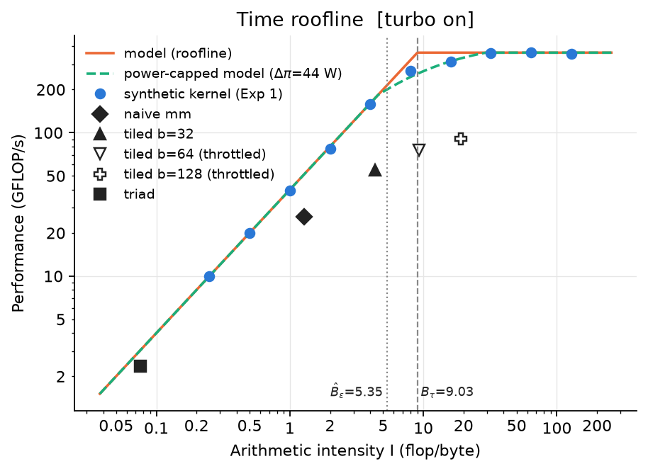
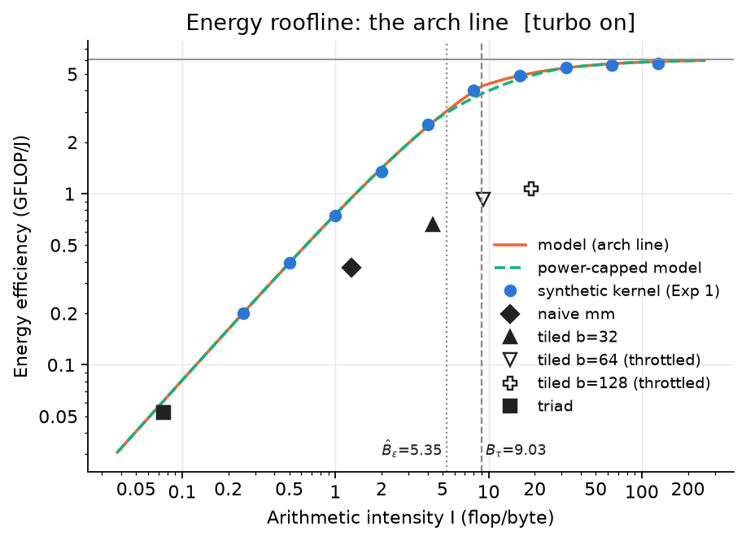
Figure 1. Time roofline (left) and energy arch line (right), turbo on. Blue dots: synthetic kernel; black markers: real kernels (hollow = every repeat throttled); green dashes: paper 2's power-capped model.
The model describes this CPU well. With three fitted constants and two measured peaks, it predicts the energy of the intensity sweep with a median error of 1.7% (maximum 4.9%) and the time with a median error of 1.3% (Figures 1 and 3). Run 2 reproduces every fitted parameter within 3.3%. The fitted εflop and εmem in run 1 are identical to the independent check in the measurement notes. Race-to-halt holds: Bτ = 9.03 > B̂ε = 5.35. Every kernel that is compute-bound in time is already within a factor of two of the best possible energy efficiency, and the measured arch line shows this: at I = 16 the kernel reaches 4.9 of the 6.1 GFLOP/J asymptote.
The balance gap has narrowed since 2013. Compared with paper 1's i7-950, our flop energy is 6.7× lower (100 vs 670 pJ), while the byte energy has hardly changed (641 vs 795 pJ/B, and ours does not even include DRAM). Bε has therefore risen from about 1.2 to 6.4, approaching Bτ, as paper 1 suggested it might. With turbo off, Bε (6.28) already exceeds Bτ (4.53). If π₀ were zero there would be a balance gap between I ≈ 4.5 and 6.3, and race-to-halt would hold only because constant power (ηflop = 0.42) pulls B̂ε down to 3.34. Paper 1 saw the same situation on its GPU in double precision.
π₀ is not idle power. The fitted constant power (23.2 W) is eight times the idle package power (2.86 W). It is the power of all cores and the uncore being awake at full clock while the work happens, whatever operations are executing. Paper 1 made the same observation (122 W fitted vs ≈ 40 W idle on its GPU).
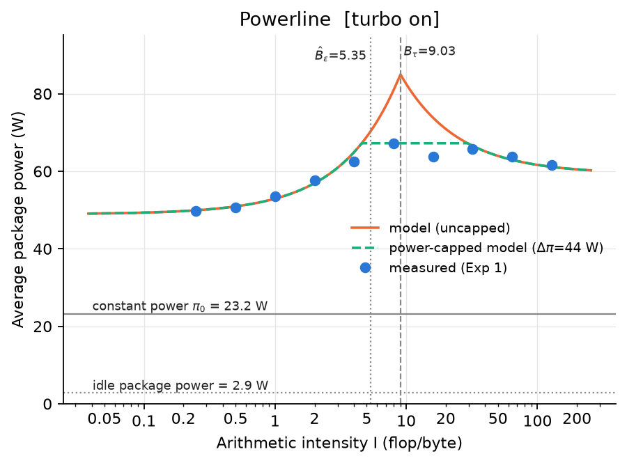
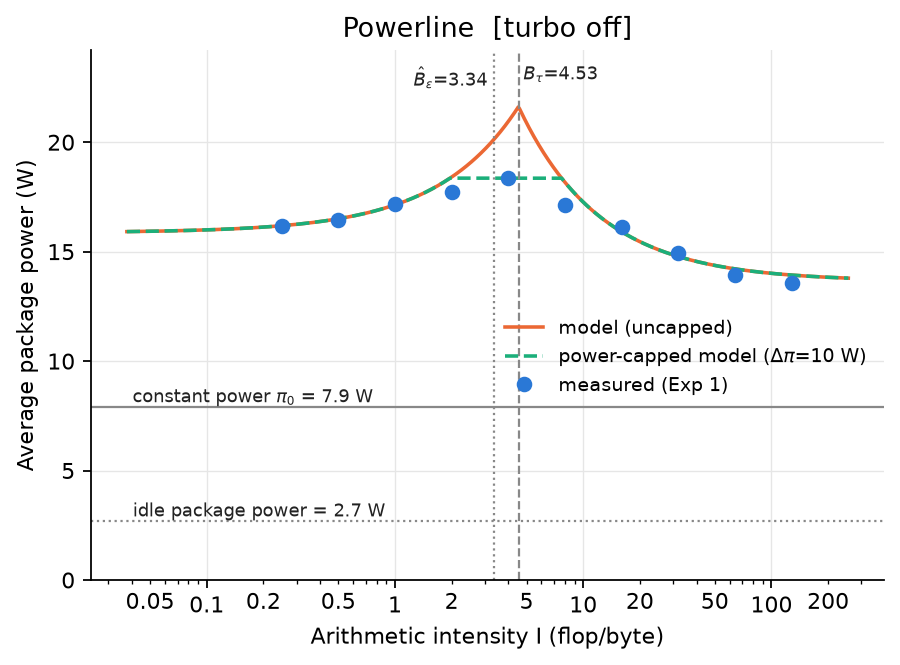
Figure 2. Powerlines, turbo on (left) and off (right). With turbo on the uncapped model asks for 85 W at Bτ, but the laptop never drew more than 67 W in Exp 1; the capped model (green) follows the plateau.
Power cap. The uncapped powerline (Figure 2) predicts 85 W at I = Bτ, because it assumes the flop units and the memory system can both run at full speed simultaneously. The laptop never drew more than 67.2 W in Exp 1 (70.7 W in run 2). Its sustained limit is PL1 = 45 W, but the runs last only about 1 s, within the PL2 = 90 W window. Thermal limits still apply: the package reaches 95–98 °C within one or two seconds. Accordingly, the two points nearest the corner (I = 8 and 16) sit 14–15% below the roof. With Δπ = 67.2 − 23.2 = 44.0 W, the capped model of paper 2 removes most of the power error (maximum 20.4% → 5.5%) and lowers the median time error (1.3% → 0.9%). However, it over-corrects at I = 8: it predicts a run 11% slower than measured, and energy 11% too high. The cap assumes operations keep their full energy cost and are merely delayed, whereas the CPU meets its limit by lowering frequency and voltage, which makes each operation cheaper. With turbo off, where the clocks stay at base and power is far below every limit, the capped model fits well (maximum energy error 7.2% → 2.5%, time 18.7% → 8.2%).
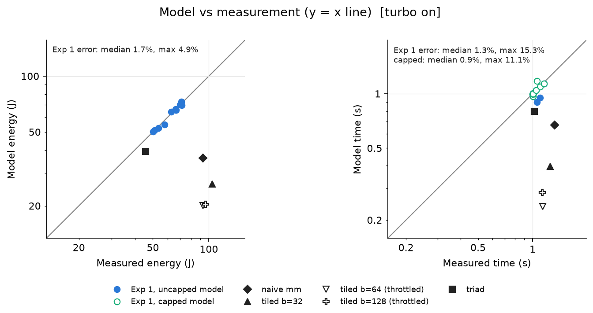
Figure 3. Model vs measured energy (left) and time (right), turbo on, log-log axes; the grey line is y = x. Real kernels are shown for reference (they are not part of the fit).
The real kernels (black markers in Figure 1) all lie below both the roofline and the arch line, as a bound-type model expects. Triad, a pure streaming kernel, comes closest: it takes 1.3× the time the roof allows, and the energy model evaluated with its measured run time is within 3% (turbo on) and 2% (turbo off). The matrix multiplies take 2–5× the time the roof allows and use 1.4–2.4× more energy than the model predicts even when given their measured time (1.8–2.4× with turbo on, 1.4–1.9× with turbo off). Their data are reused from L1 and L2 over and over, and that traffic is not in Q, which counts only DRAM bytes. Paper 1 hit the same limitation with its fast-multipole kernel and fixed it by adding a cache-access energy term. The model is therefore a reliable upper bound for performance and efficiency, and an accurate predictor only for kernels whose traffic is dominated by DRAM.
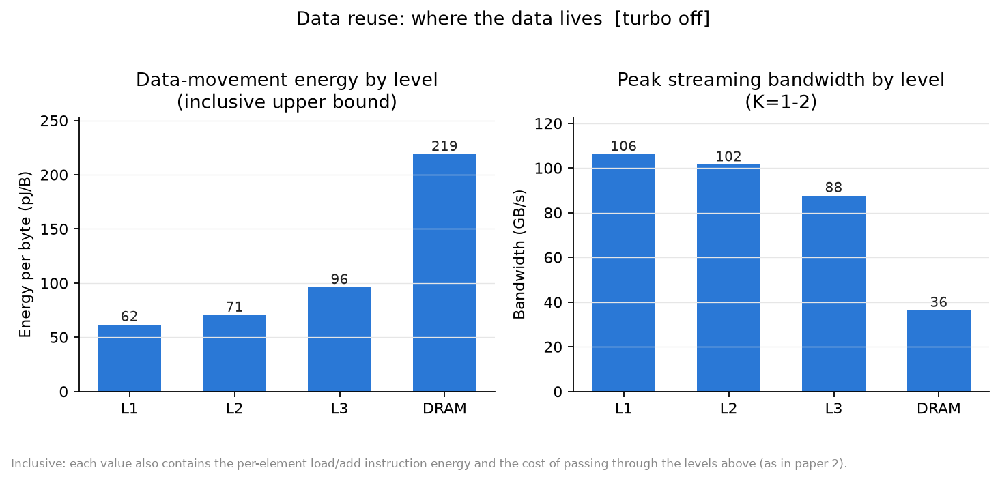
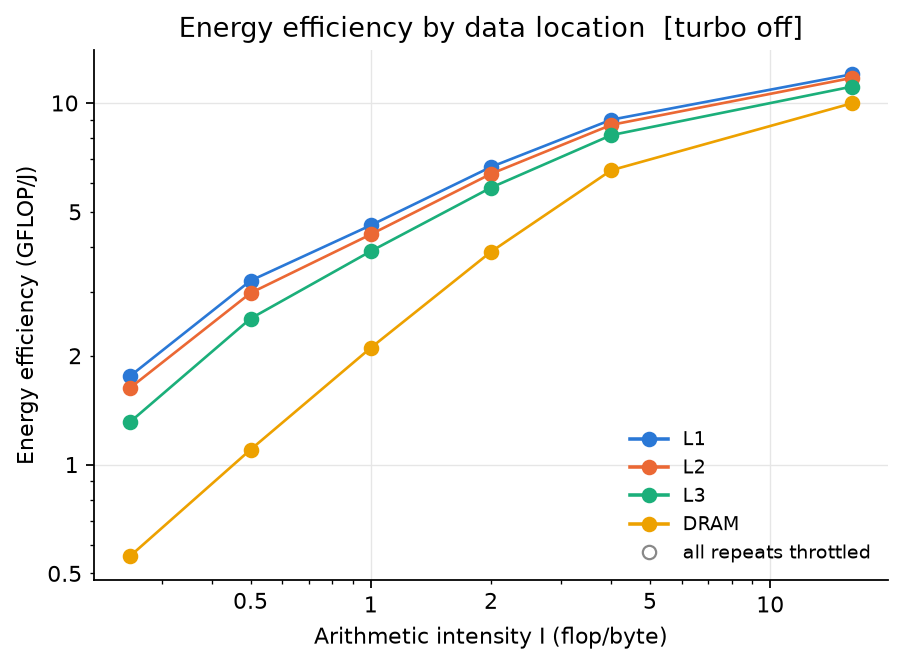
Figure 4. Data reuse, turbo off (no throttled rows). Left: inclusive energy per byte by level and peak streaming bandwidth. Right: energy efficiency against intensity for each data location.
Keeping data closer to the core lowers the energy per byte at every level (Figure 4, turbo off): L1 62 < L2 71 < L3 96 < DRAM 219 pJ/B. These are inclusive upper bounds: each value also contains the load and add instructions executed per element, which is why L1 is far above the few pJ per access of an SRAM array. The relative costs are what matter: an L1 byte costs 0.28× a DRAM byte, L2 0.32× and L3 0.44×. With turbo on, L1 (195 pJ/B, 0.30×), L3 (284, 0.44×) and DRAM (643) show the same ratios. Turbo-on L2 (275 pJ/B) is unreliable: its three most data-dominated configurations (K = 1, 2, 4) were throttled in every repeat and had to be excluded. At low intensity the energy efficiency differs by up to 4× between L1 and DRAM (0.81 vs 0.20 GFLOP/J at I = 0.25, turbo on). The levels converge at high intensity, where flops dominate the energy.
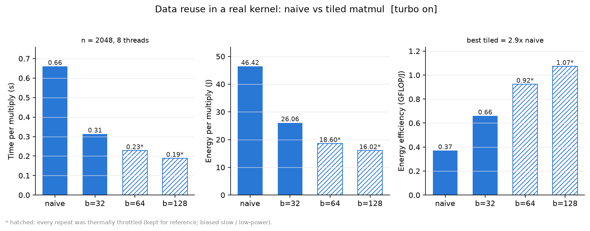
Figure 5. Data reuse in a real kernel, turbo on: naive vs tiled matrix multiply (n = 2048, 8 threads). Hatched bars: every repeat thermally throttled.
Tiling turns the same effect into a real optimisation (Figure 5). The 128-wide tiles raise the DRAM intensity from 1.3 to 19 flop/B, cut the run time 3.5× and the energy 2.9×. The energy efficiency improves 2.9× with turbo on and 2.2× with turbo off (where all configurations are clean). Here faster and greener coincide, because tiling removes DRAM traffic, the expensive component of both. The turbo-on b = 64 and b = 128 numbers come from throttled runs, which makes them slightly pessimistic for speed.
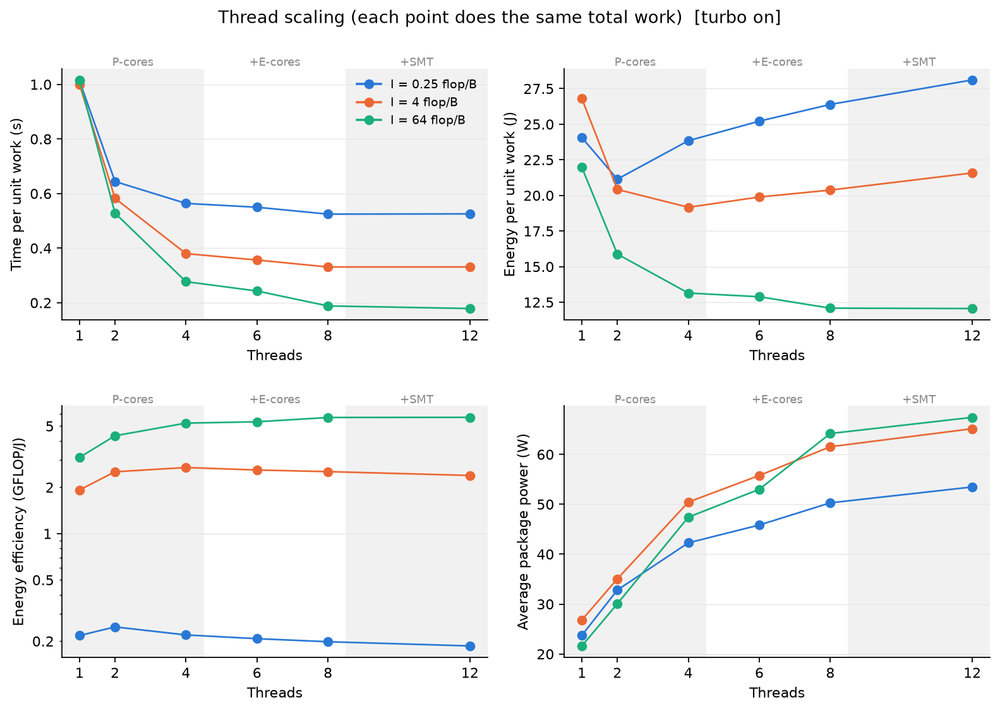
Figure 6. Thread scaling at I = 0.25, 4 and 64 flop/B (turbo on); every point does the same total work. Shaded bands mark where threads are added on P-cores, E-cores and SMT siblings.
The thread count that minimises energy depends on intensity (Figure 6):
| I (flop/B) | Fastest at | Most energy-efficient at | GFLOP/J at best vs at fastest |
|---|---|---|---|
| 0.25 (memory-bound) | 8 threads | 2 threads | 0.25 vs 0.20 |
| 4 (near balance) | 8 threads (12 in run 2) | 4 threads | 2.69 vs 2.53 |
| 64 (compute-bound) | 12 threads | 12 threads | 5.70 |
For the memory-bound kernel, two P-cores already reach 80% of the best speed (bandwidth saturates at about four threads). Every additional thread adds 2–5 W of power but almost no speed, so energy rises from 21 J to 28 J for the same work. Extra threads help energy only when they also reduce time enough to save constant energy, which happens only for compute-bound code. Two effects in the figure lie outside the model. Adding E-cores (6–8 threads) gives smaller gains per thread than adding P-cores, because they are slower and run at a different clock. SMT (12 threads) adds power but almost no speed for this FMA-bound kernel. The model assigns one εflop and one peak rate to the whole chip, so it cannot represent a heterogeneous mix of cores or contention for shared bandwidth.
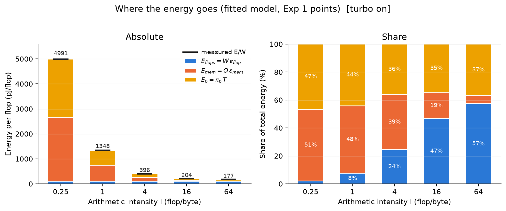
Figure 7. Energy per flop split into flops (W·εflop), memory (Q·εmem) and constant energy (π₀·T) at five intensities, turbo on. Black ticks: measured E/W.
Constant energy is 35–47% of the total at every intensity with turbo on (Figure 7), and 43–56% with turbo off. At low intensity, memory and constant energy split the bill almost evenly and flops are negligible (2%). At I = 64 flops dominate (57%), but more than a third is still spent just keeping the chip on. This large, time-proportional term is what makes race-to-halt attractive: any speed-up removes part of it. It also means π₀ needs reducing more than any other parameter, which paper 2 concluded across its twelve platforms.
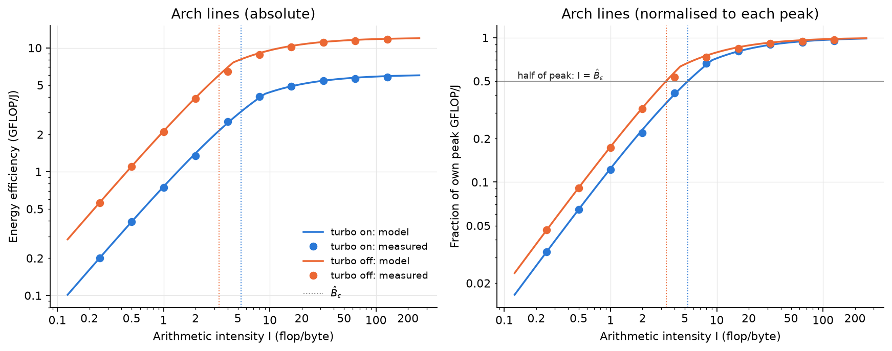
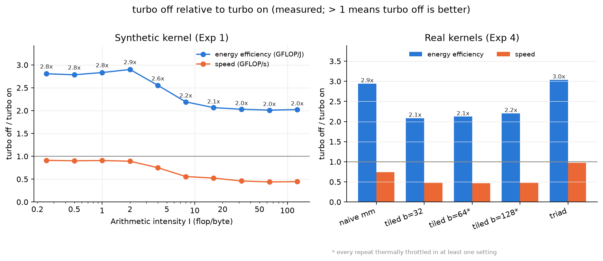
Figure 8. Top: fitted arch lines and measurements with turbo on and off, absolute and normalised to each setting's peak. Bottom: measured turbo-off / turbo-on ratio of energy efficiency and speed.
Disabling turbo makes every kernel 2.0–2.9× more energy-efficient at every intensity (Figure 8): peak efficiency rises from 6.1 to 12.1 GFLOP/J. The cost in speed depends on intensity. Compute-bound code runs at 0.44–0.46× its turbo speed and gains 2.0× in efficiency. Memory-bound code loses only about 9% of its speed, because DRAM bandwidth barely depends on core clock, and gains 2.8–2.9×. The real kernels behave the same way: triad and naive matmul gain 3.0× and 2.9× for at most 26% lost speed, the tiled kernels 2.1–2.2×.
The fitted constants explain this. All three energy constants drop by about a factor of three (εflop 100 → 35 pJ, εmem 641 → 219 pJ/B, π₀ 23 → 8 W), which is roughly what the square of the voltage reduction would give. Bε stays near 6.3: both εflop and the on-chip part of εmem scale with the same core and uncore voltage. Bτ halves (the flop rate halves, bandwidth falls only 9%), and B̂ε falls from 5.35 to 3.34. The verdict is race-to-halt in both settings, yet the slower setting is twice as efficient. Racing to halt is the right advice within a fixed frequency and voltage, but not across frequencies. The model has no frequency or voltage in it: its constants are fitted at one DVFS state, so it cannot say which state to choose. Even so, refitting the model at each state predicts the efficiency gain accurately.
Strengths.
Weaknesses, with evidence from our data.
Limitations of this study. One machine; package-only energy; a same-day repeat rather than one after a reboot; a fit on the synthetic kernel only; throttled turbo-on configurations excluded or flagged; no thread experiment with turbo off.
[1] J. W. Choi, D. Bedard, R. Fowler, R. Vuduc, "A roofline model of energy," Proc. IEEE IPDPS, 2013, pp. 661–672.
[2] J. W. Choi, M. Dukhan, X. Liu, R. Vuduc, "Algorithmic time, energy, and power on candidate HPC compute building blocks," Proc. IEEE IPDPS, 2014, pp. 447–457.
[3] S. Williams, A. Waterman, D. Patterson, "Roofline: an insightful visual performance model for multicore architectures," Commun. ACM 52(4), 2009.
How to reproduce every number and figure: see the README section "Analysis and report".